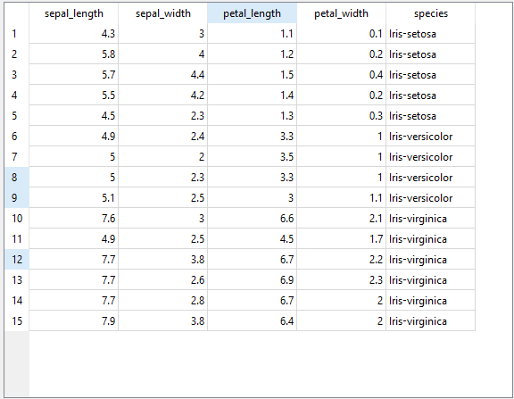

Eksplorasi Data IRIS#
Eksplorasi data merupakan tahapan awal dalam proses analisis data yang bertujuan untuk memahami karakteristik, struktur, serta pola yang terdapat dalam suatu dataset. Tahapan ini penting dilakukan sebelum proses pemodelan atau analisis lanjutan.
Dataset yang digunakan dalam analisis ini adalah Iris Dataset, yang diperkenalkan oleh Ronald A. Fisher pada tahun 1936. Dataset ini sering digunakan dalam studi klasifikasi dan machine learning karena memiliki struktur sederhana namun pola pemisahan kelas yang jelas.
Dataset IRIS terdiri dari 150 observasi dengan 4 atribut numerik dan 1 atribut kategorikal sebagai label kelas.
Berikut adalah 10 data pertama pada dataset IRIS Flower:
Tabel 10 Data Pertama Dataset IRIS#
No |
Sepal Length |
Sepal Width |
Petal Length |
Petal Width |
Species |
|---|---|---|---|---|---|
1 |
5.1 |
3.5 |
1.4 |
0.2 |
Iris-setosa |
2 |
4.9 |
3.0 |
1.4 |
0.2 |
Iris-setosa |
3 |
4.7 |
3.2 |
1.3 |
0.2 |
Iris-setosa |
4 |
4.6 |
3.1 |
1.5 |
0.2 |
Iris-setosa |
5 |
5.0 |
3.6 |
1.4 |
0.2 |
Iris-setosa |
6 |
5.4 |
3.9 |
1.7 |
0.4 |
Iris-setosa |
7 |
4.6 |
3.4 |
1.4 |
0.3 |
Iris-setosa |
8 |
5.0 |
3.4 |
1.5 |
0.2 |
Iris-setosa |
9 |
4.4 |
2.9 |
1.4 |
0.2 |
Iris-setosa |
10 |
4.9 |
3.1 |
1.5 |
0.1 |
Iris-setosa |
Dataset Iris Flower ini didapatkan dari kaggle, berikut link kaggle dari data: https://www.kaggle.com/datasets/arshid/iris-flower-dataset
Deskripsi Dataset#
Dataset IRIS memiliki lima atribut sebagai berikut:
No |
Atribut |
Tipe Data |
Deskripsi |
|---|---|---|---|
1 |
sepal length |
Numerik (cm) |
Panjang kelopak bunga |
2 |
sepal width |
Numerik (cm) |
Lebar kelopak bunga |
3 |
petal length |
Numerik (cm) |
Panjang mahkota bunga |
4 |
petal width |
Numerik (cm) |
Lebar mahkota bunga |
5 |
species |
Kategorikal |
Jenis bunga iris |
Dataset terdiri dari tiga kelas:
Iris-setosa
Iris-versicolor
Iris-virginica
Masing-masing kelas berjumlah 50 data sehingga dataset bersifat seimbang (balanced dataset).
Deteksi Outlier#
Deteksi outlier dilakukan menggunakan widget Outliers pada Orange Data Mining. Berdasarkan hasil analisis, teridentifikasi 15 data yang dikategorikan sebagai outlier oleh model.
Namun, perlu diperhatikan bahwa metode yang digunakan bersifat berbasis model (misalnya One-Class SVM atau Isolation Forest), sehingga data yang dianggap outlier merupakan data yang memiliki pola berbeda dari mayoritas distribusi global, bukan karena kesalahan pencatatan.
Dataset IRIS secara umum tidak memiliki outlier ekstrem berdasarkan analisis statistik klasik (misalnya metode IQR). Oleh karena itu, data yang terdeteksi lebih merepresentasikan perbedaan karakteristik antar kelas daripada anomali data.
